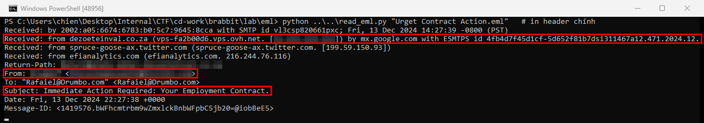
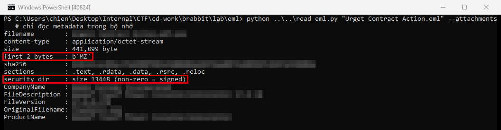
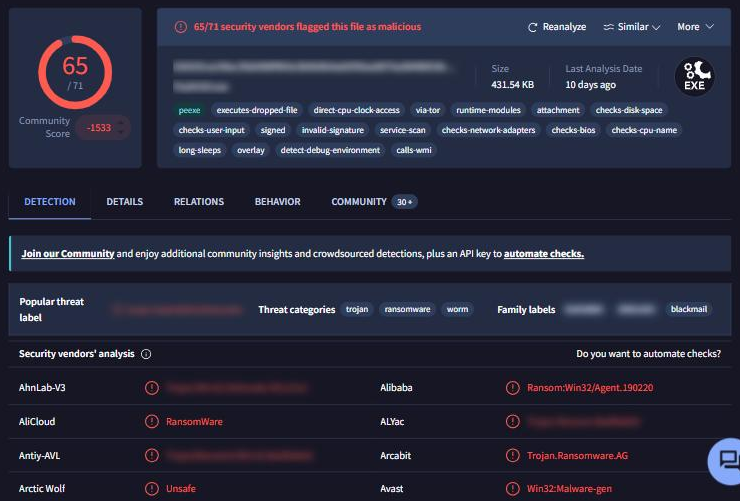
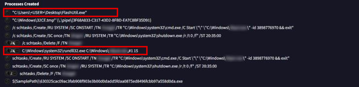
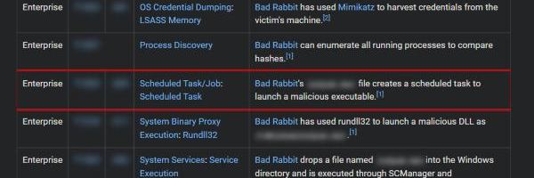
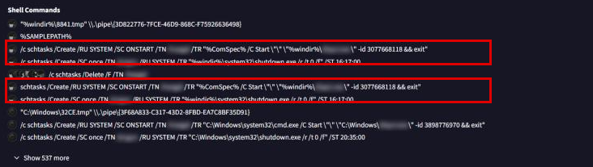
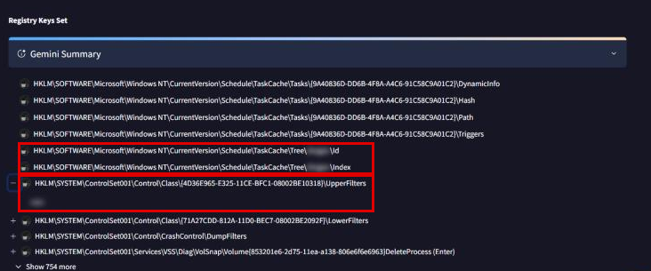
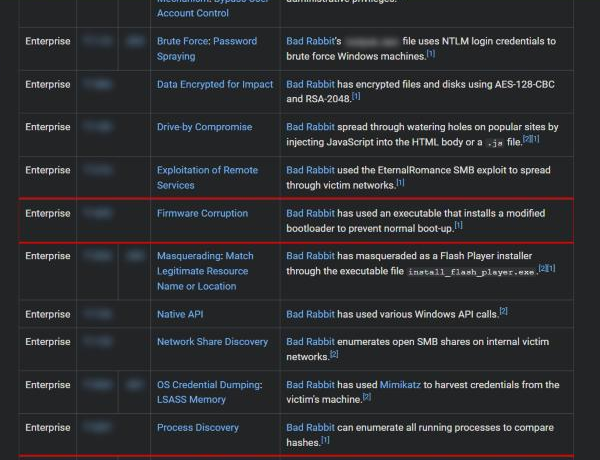
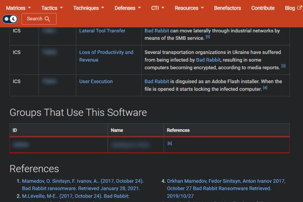

BRabbit
- Lab: BRabbit trên CyberDefenders. Nhóm Threat Intel, độ khó Medium, đã retired.
- Dữ liệu: một file
.eml(email lừa đảo, gửi ngày 13/12/2024), nằm trong zip có mật khẩu. Mẫu ransomware là file đính kèm của email. - Công cụ: thư viện
emailvàpefilecủa Python để đọc header và metadata file đính kèm ngay trong bộ nhớ (không ghi file ra đĩa, không chạy), VirusTotal, ANY.RUN (sandbox chạy thử mã độc), Malpedia, MITRE ATT&CK. - Quy ước:
- Bài không ghi giá trị đáp án. Chỗ nào cần tra cứu có dòng "Hướng giải" chỉ nơi tìm.
- Khung đỏ trên ảnh là chỗ cần chú ý, vùng làm mờ là giá trị trùng với đáp án hoặc để lộ đáp án.
Tóm tắt kết quả
- Email lừa đảo giả dạng thư trao đổi hợp đồng. Tên miền gửi thư là tên miền nhái (typosquatting): thay một ký tự bằng cặp ký tự trông gần giống để bắt chước tên miền thật.
- Mẫu đính kèm được các engine trên VirusTotal xếp vào họ ransomware Bad Rabbit.
- Trong sandbox của VirusTotal, mẫu thả một file vào
C:\Windowsrồi chạy file đó như DLL bằngrundll32.exe. - Mẫu tạo hai scheduled task dưới quyền SYSTEM: một task chạy file thực thi khi máy khởi động, một task khởi động lại máy bằng
shutdown.exe /r /t 0 /f. - Mẫu ghi tên một driver vào
UpperFilterscủa lớp ổ đĩa. MITRE ATT&CK ghi nhận Bad Rabbit cài bootloader đã sửa đổi để máy không khởi động bình thường (Firmware Corruption). - MITRE ATT&CK gán Bad Rabbit cho một nhóm tấn công.
- Chưa có chứng cứ trong bài cho danh sách tài khoản viết cứng, kênh C2 qua HTTP và thông báo đòi tắt phần mềm diệt virus (Bước 4, 5, 7).
Bước 1: phân tích email lừa đảo
- Mục tiêu: tìm địa chỉ gửi email chứa file đính kèm.
- Cách làm: đọc header email (bằng Email Header Analyzer hoặc thư viện
emailcủa Python), xem trường người gửi và so tên miền với tên miền thật mà email bắt chước.

- Nhận định:
- Tên miền gửi thư khác tên miền thật đúng một chỗ: một chữ cái bị thay bằng hai chữ cái đứng cạnh nhau trông giống chữ đó. Người đọc lướt khó nhận ra.
- Phần tên người dùng trong địa chỉ email giả danh lãnh đạo công ty để tạo áp lực.
- Hướng giải: địa chỉ email nằm ở trường From trong kết quả phân tích header.
Bước 2: xác định họ ransomware
- Mục tiêu: biết mẫu thuộc họ mã độc nào.
- Cách làm: đọc metadata file đính kèm và tính SHA-256 trong bộ nhớ, rồi tra hash trên VirusTotal, xem nhãn của các engine và đối chiếu Malpedia.


- Nhận định:
- Tên file có hai phần mở rộng, phần trước trông như tài liệu. Windows mặc định ẩn phần mở rộng, nên người nhận chỉ thấy phần trước.
- Chữ ký số và thông tin phiên bản giả mạo làm file trông hợp lệ, nhưng VirusTotal cho thấy chữ ký không hợp lệ.
- Đa số engine thống nhất gán mẫu vào họ Bad Rabbit. Đây cũng là tên lab gợi ý.
- Hướng giải: tên họ viết liền theo cách các engine trên VirusTotal đặt nhãn.
Bước 3: file đầu tiên được thả
- Mục tiêu: tìm file đầu tiên ransomware ghi xuống máy và cách nó được chạy.
- Cách làm: tra SHA-256 của file đính kèm (Bước 2) trên VirusTotal, mở tab Behavior, xem mục Processes Created.

- Nhận định:
- File được thả vào
C:\Windowsrồi chạy bằngrundll32.exevới hàm export thứ tự#1. Tức là file này là DLL, dù tên file không mang đuôi.dll. - Hướng giải: tên file là phần đã làm mờ trong command line của
rundll32.exe.
Bước 4: thông tin đăng nhập viết cứng trong file
- Mục tiêu: tìm tên người dùng của một cá nhân trong danh sách tài khoản viết cứng.
- Cách làm: trích chuỗi (strings) từ file ở Bước 3, tìm đoạn danh sách tên người dùng và mật khẩu.
- Nhận định:
- Chưa có chứng cứ trong bài: lab chỉ cung cấp email, file ở Bước 3 không có sẵn để trích strings. Bảng MITRE ATT&CK của Bad Rabbit (Bước 10) ghi file này dùng thông tin đăng nhập NTLM để brute force (T1110.003 Password Spraying), nhưng không liệt kê tên tài khoản.
- Hướng giải: tải file thả ra từ một sandbox công khai (ANY.RUN, Tria.ge), chạy strings, lọc danh sách tên người dùng, bỏ các tài khoản chung (admin, guest, user...). Tên còn lại trông như tên người thật là đáp án.
Bước 5: persistence và C2 theo MITRE ATT&CK
- Mục tiêu: ánh xạ cơ chế duy trì và kênh C2 sang sub-technique của MITRE ATT&CK.
- Cách làm: đối chiếu hành vi ở Bước 6 với trang Bad Rabbit (S0606) trên MITRE ATT&CK.

- Nhận định:
- Hành vi tạo task ở Bước 6 khớp với sub-technique Scheduled Task.
- Chưa có chứng cứ trong bài cho kênh C2 qua HTTP: tab Behavior của VirusTotal và bảng technique của MITRE cho mẫu này không có dòng Application Layer Protocol. Cần báo cáo sandbox có ghi lại lưu lượng mạng của mẫu (PCAP của ANY.RUN hoặc Tria.ge).
- Hướng giải: ID sub-technique là ô đã làm mờ ở dòng Scheduled Task.
Bước 6: tên các scheduled task
- Mục tiêu: xác định tên task được tạo.
- Cách làm: trong tab Behavior của VirusTotal, xem mục Shell Commands, đọc tham số
/TN(tên task) của các lệnhschtasks.

- Nhận định:
- Có hai task, cả hai chạy dưới quyền SYSTEM. Một task chạy file thực thi do ransomware thả mỗi khi máy khởi động. Task còn lại khởi động lại máy theo giờ hẹn với
shutdown.exe /r /t 0 /f. - Mục Registry Keys Set (Bước 8) cũng có hai khóa
TaskCache\Tree\<tên task>, khớp với hai task này. - Hướng giải: tên task nằm sau tham số
/TNcủa hai lệnhschtasks.
Bước 7: thông báo đòi tắt phần mềm diệt virus
- Mục tiêu: đọc thông điệp mà file thực thi do ransomware thả hiện ra khi chạy.
- Cách làm: chạy file đó trong sandbox, xem cửa sổ Console.
- Nhận định:
- Chưa có chứng cứ trong bài: tab Behavior của VirusTotal không ghi nội dung hiển thị trên màn hình. Cần video hoặc ảnh chụp màn hình của sandbox (ANY.RUN) khi file chạy.
- Hướng giải: câu thông báo hiện trong cửa sổ Console khi file thực thi được chạy.
Bước 8: driver mã hóa đĩa
- Mục tiêu: tìm driver dùng để mã hóa ổ cứng.
- Cách làm: trong tab Behavior, xem mục Registry Keys Set, mở rộng khóa
UpperFilterscủa lớp thiết bị ổ đĩa.

- Nhận định:
- Lớp
{4D36E965-E325-11CE-BFC1-08002BE10318}là lớp ổ đĩa (Disk drives). Thêm tên driver vàoUpperFilterscủa lớp này giúp driver đứng giữa hệ điều hành và ổ đĩa, nên có thể mã hóa dữ liệu ở mức thấp. - Hướng giải: tên driver là giá trị đã làm mờ của
UpperFilters. Thông tin mô tả của file driver cho biết dự án mã nguồn mở gốc.
Bước 9: kỹ thuật làm máy không khởi động được
- Mục tiêu: ánh xạ hành vi phá vùng khởi động sang MITRE ATT&CK.
- Cách làm: trên trang Bad Rabbit của MITRE ATT&CK, tìm technique trong nhóm Impact mô tả việc sửa bootloader.

- Nhận định:
- Bootloader bị thay thế làm máy không vào được Windows như bình thường. Task khởi động lại máy ở Bước 6 kích hoạt việc này.
- Hướng giải: ID technique là ô đã làm mờ ở dòng Firmware Corruption.
Bước 10: gán nhóm tấn công
- Mục tiêu: xác định nhóm đứng sau chiến dịch.
- Cách làm: đọc mục Groups That Use This Software trên trang Bad Rabbit (S0606) của MITRE ATT&CK.

- Nhận định:
- MITRE ATT&CK gán Bad Rabbit cho một nhóm duy nhất, dựa trên nguồn tham chiếu [6] của trang.
- Hướng giải: tên nhóm là ô đã làm mờ trong mục Groups That Use This Software.